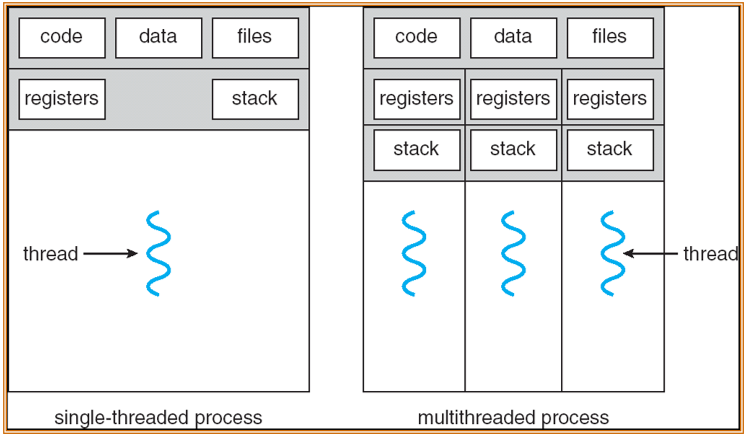
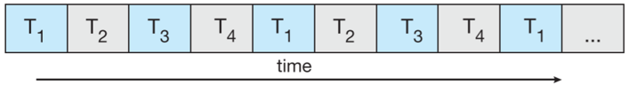
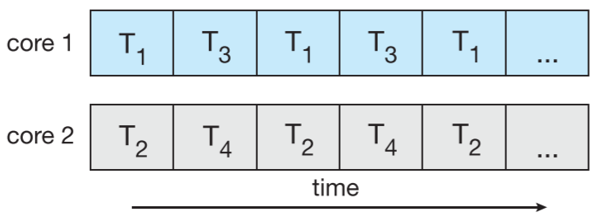
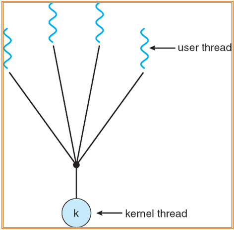
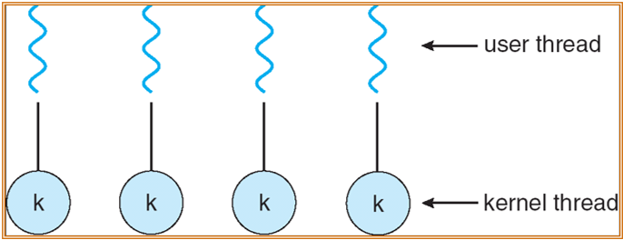
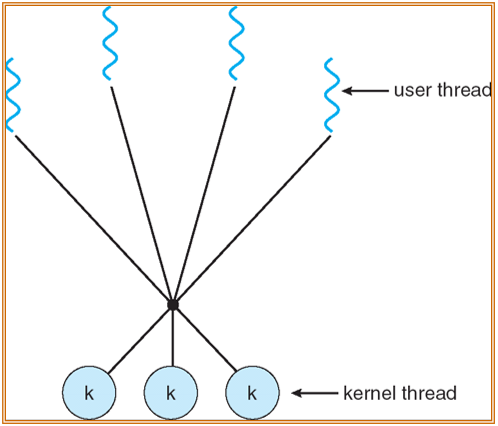
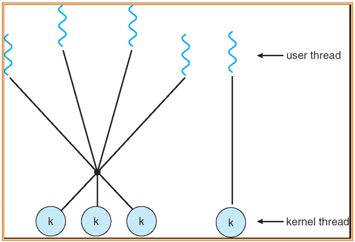

Threads
约 1704 个字 7 张图片 预计阅读时间 11 分钟
概述
引入进程的目的是更好地使多道程序并发执行，提高资源利用率和系统吞吐量；而引入线程的目的则是减小程序在并发执行时所付出的时空开销，提高操作系统的并发性能。
线程最直接的理解是“轻量级进程”，是一个基本的CPU执行单元，也是程序执行流的最小单元，由线程ID、程序计数器、寄存器集合和堆栈组成。线程是进程中的一个实体，是被系统独立调度和分派的基本单位，线程自己不拥有系统资源，只拥有一点儿在运行中必不可少的资源，但它可与同属一个进程的其他线程共享进程所拥有的全部资源。
在多进程模型中，代码和文件数据是可以共享的，但是寄存器和栈需要每个进程自己维护。

- 线程的优点：
- 响应性：交互式应用程序
- 资源共享：内存中的代码进而数据可以共享
- 经济：创建新进程的代码较高，但是创建新线程需要的资源较少
- MP架构的使用：多线程可以提高并发度
Concurrency vs. Parallelism
-
Concurrency

Concurrency 本质上还是一个单核执行的过程，只是进行了时间片的拆分，实际上还是不同线程的交替执行，只是因为执行的速度较快，所以感官上可能是同时执行的。 -
Parallelism

Parallelism 是一个多核的执行效果，因为CPU有多个核心，所以可以在同一时刻执行多个任务。在单个核心的内部，实现的方式还是类似于并发，也就是划分成不同的时间片，不同时间片执行不同的线程。
线程实现方式
线程实现可以分为两种：用户级线程以及内核级线程
- 用户级线程：就是从用户的角度能够看到的线程，线程的管理工作是有用户自己来管理的，内核感受不到这些线程的存在。实现方式通常为用户层面的线程库。
- 优点：
- 线程切换不需要切换到内核执行，节省模式切换的开销
- 调度算法可以是进程专用的，不同的进程可根据自身的需要，对自己的线程选择不同的调度算法
- 用户级线程的实现与操作系统平台无关，对线程管理的代码是属于用户程序的一部分
- 缺点：
- 系统调用的阻塞问题，当线程执行一个系统调用时，不仅该线程被阻塞，而且进程内的所有线程都被阻塞
- 不能发挥多CPU的优势，内核每次分配给一个进程的仅有一个CPU，因此进程中仅有一个线程能执行
- 优点：
- 内核级线程：由操作系统内核直接支持的线程，线程管理的所有工作都是在内核态实现的
- 优点：
- 能发挥多CPU的优势，内核能同时调度同一进程中的多个线程并行执行
- 如果进程中的一个线程被阻塞，内核可以调度该进程中的其他线程占用CPU，也可运行其他进程中的线程(多对多模型)
- 内核支持线程具有很小的数据结构和堆栈，线程切换比较快，开销小
- 内很本身也可采用多线程技术，可以提高系统的执行速度和效率
- 缺点：
- 同一进程中的线程切换，需要从用户态转到核心态进行，系统开销较大
- 优点：
多线程模型
Many-to-One
多个用户级线程对应一个内核级线程

One-to-One
每个用户级线程都对应一个内核级线程

Many-to-Many
- 多个用户级线程映射到多个内核级线程上
- 操作系统创建多个内核级线程

三种模型的对比
- 多对一模型
- 线程管理是高效的，但是如果有线程调用了系统调用就会阻塞，并且内核只能单次调度一个线程
- 单对单模型
- 并发度更高，但是内核级线程的创建价格高昂
- 多对多模型
- 线程的调度是最灵活的
Two-level Model
和多对多模型类似，只是允许用户级线程与内核级线程进行绑定(也就是在有多对多模型的同时还有单对单模型)

线程问题
- fork() and exec() system calls
- fork()的时候是只fork当前线程还是所有的线程？
- 部分UNIX系统中存在两种fork调用，也就是两种fork的情况都存在
- exec()的时候会替换整个进程
- fork()的时候是只fork当前线程还是所有的线程？
- Thread cancellation：在线程实际完成之前将其终止
- 异步终止(Asynchronous cancellation)：会直接终止目标线程
- 延迟终止(Deferred cancellation)：允许目标线程定期检查它的标志位来查看是否应该取消
- Signal handling
- 在UNIX系统中，信号用于通知进程某个特定实践是否已经发生
- 信号处理程序用于处理进程的同步以及异步信号
- 信号是由特定事件产生的
- 信号被传送给进程
- 信号被处理
- 信号的传递由信号的类型决定
- 将信号传递给使用这个信号的线程
- 将信号传递给进程中的每个线程
- 将信号传递给进程中的特定线程
- 指定一个特殊的线程来接收给进程的所有信号
- Thread pools
- 在一个池子中创建多个空闲线程来等待被使用
- 优点：
- 相较于当场创建新线程并且分配，可以实现更快的线程分配
- 允许将应用程序中线程的数量设置为线程池的大小
- Thread-specific data
- 线程的局部存储允许有自己的数据副本
- 和静态变量类似，但是每一个线程的都是单独的
- 在无法控制线程创建过程的时候有用
- Scheduler activations
- 多对多模型和二级模型都需要通信来维护分配给应用程序的适当数量的内核线程
- LWP是一个附加在内核线程上的虚拟处理器
- 调度器激活提供upcalls —— 一种从内核到线程库的通信机制
- upcalls由线程库使用向上调用处理程序处理
- 这种通信允许应用程序维护正确数量的内核线程。当应用程序线程即将阻塞时，将触发一个upcall。